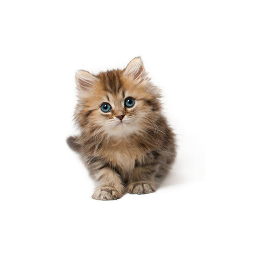

Cats have lived outdoors for more than 10,000 years and shared the environment with birds and wildlife. If one understands cats in the history of human evolution, it becomes clear how domestic cats lived indoors and how millions of feral cat species still lead healthy lives today, long after domestic cats had adapted. 10,000 to 12,000 years ago, cat groups began their unique relationship with humans in the Fertile Crescent, a geographical region where the earliest evolution of human civilization took place and encompassed today's parts of Western Asia.

British Shorthair
Persian
